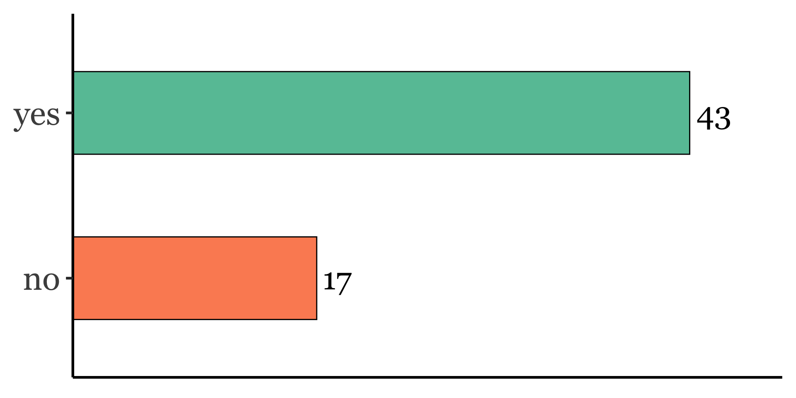
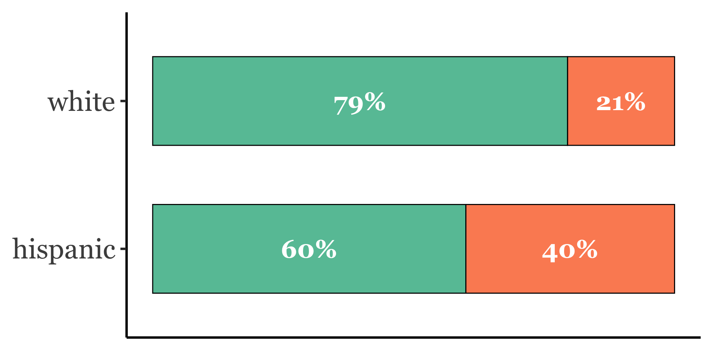
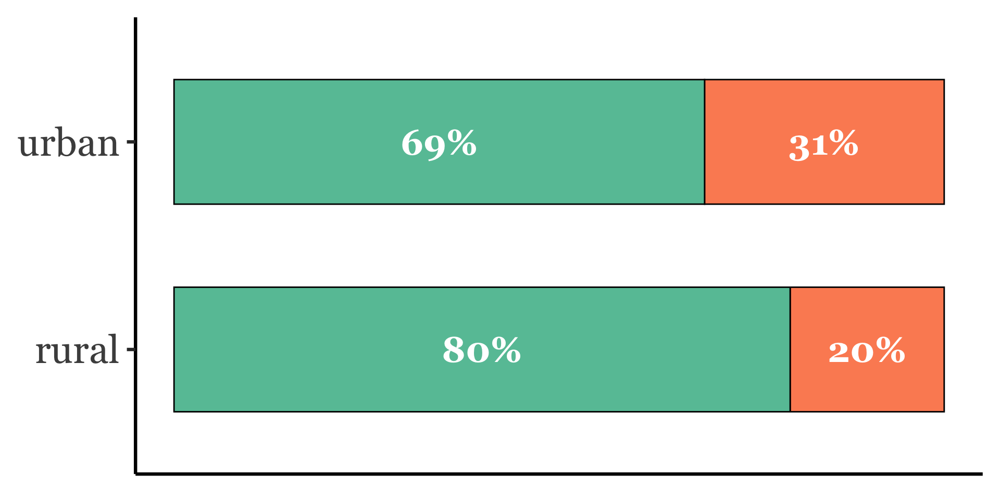
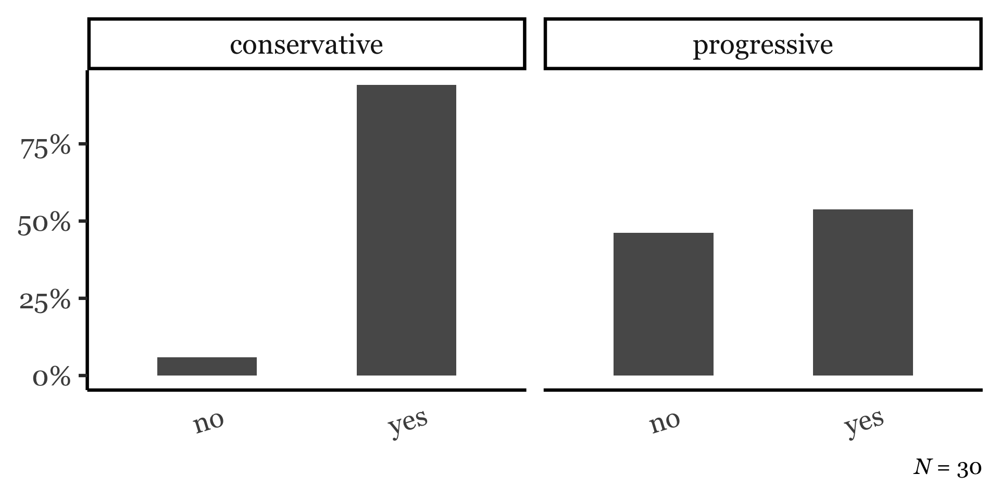
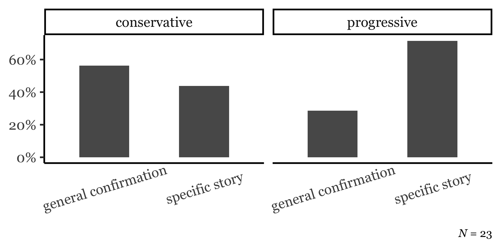
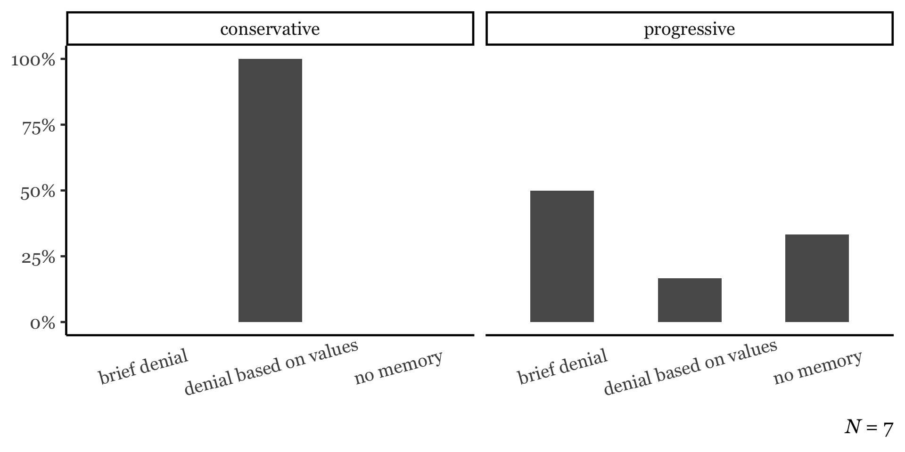

| Speaker | Annotation |
|---|---|
| Interviewer | This is [INTERVIEWER NAME {Daniel Carillo}]. Today is July 2nd, 2024, and I'm here in Del Rio, Texas for an interview with one of our community members. Before we begin, I'd like to get verbal consent for the form that we went over. [PASSAGE OMITTED] |
| Participant | ...uh, customs, that kind of stuff right now, today. |
| Interviewer | What would you say are the strengths of this community? |
| Participant | [LONG PAUSE] I think the people who started it had to be strong and resilient. Uh, I hope it continues that way. I wish more I wish more people like [INTERVIEWER NAME {Daniel}] would stay here. |
| Interviewer | Um, what would you say are some of the benefits of living in this community? |
| Participant | [LONG PAUSE] It's kind of- you can make the kind - it's a good lifestyle if you make it that way. Uh, you have a chance. You don't have - the crime isn't that bad if you watch where you're going. Uh, it's getting worse, though, with what's going on on the border. Uh, the education system, it's there if you want it. If you want to be a student, you can be one. If you don't, it won't be there for you. Uh, the people [THUMP OUTSIDE]? That's- |
Co-constructing CRINGE
Ambivalent Affect Elicitation and Vernacular Styles
in Dialectological Fieldwork
Lars Hinrichs ![]()
The University of Texas at Austin
July 2025
CRINGE as a phatic device
- The humor inherent in CT makes speakers volunteer these topics precisely for phaticity’s sake (Jefferson 1984).
- Speakers seek the relief of sharing cringey experiences in conversation online and f2f (Rimé 2009).
- Embrace of awkwardness can engender authenticity (Haen 2018, Lotfy 2024).
Home to Texas (H2TX)
Clip 1: DelRio_DC_07022024
Some concepts
- sociolinguistic interview
- Key data elicitation method in dialectology and sociolinguistics
- observer’s paradox
- The challenge of studying natural speech patterns when the very act of observing alters the way people speak (Labov 1972 a, b).
- danger-of-death (DoD) question
- An interviewing tool used to elicit natural, casual speech from participants (Labov 1972 a, b).
Critiques of the DoD question and observer’s paradox
- Doubts about effectiveness (Milroy 1987, Butters 2000)
- Ethical problems with trauma narrative elicitation (Finlay 2005, Mendoza-Denton 2008, Schilling 2013)
- “False dilemma?” - Slx interview as interactional event in its own right… all narrative is performative (Johnstone 2006, Schilling 2008, De Fina & Perrino 2011).
- Effects of observer’s paradox can be mitigated (Cukor-Avila 2000)
- Sneller & Barnhardt (2023): pop-cultural context for chatty questions
In designing slx interview questions for the 21st century, we should move away from a concern with observer’s paradox and toward phaticity.
Some concepts
- sociolinguistic interview
- Key data elicitation method in dialectology and sociolinguistics
- observer’s paradox
- The challenge of studying natural speech patterns when the very act of observing alters the way people speak (Labov 1972 a, b).
- danger-of-death (DoD) question
- An interviewing tool used to elicit natural, casual speech from participants (Labov 1972 a, b).
- phatic communion
- Create “ties of union” through the “exchange of words” (Malinowski 1923)
Research questions
- Can a question aimed at eliciting CT effectively achieve what the DoD question was designed to do in slx interviews?
- If not, why?
Data and Methods
Collecting sociolinguistic interviews with Home To Texas (H2TX)
- Decentralized community-embedded fieldwork
- Wide geographic spread; superior community access.
H2TX 2024 interviews

| Racioethnic ID | n |
|---|---|
| white | 40 |
| hispanic | 15 |
| american indian | 3 |
| asian | 2 |
| african american | 1 |
Interview protocol
A - The community: strengths, weaknesses, and change
(open-ended)
B - Multilingualism: personal background and attitudes
(survey questions and Likert scale responses)
C - Open-ended conversation questions
D - Reading passage
Key question: no. 15
Did you ever tell a story about another person, thinking the other person was not near you, but then turned around and saw that person was standing right next to you? [a. Could you tell me about that? What happened?]
Method: Content analysis
Did participant answer “yes” or “no”?
- If “yes”, did they offer a story?
- If “no”, was an explanation provided?




Response subtypes: Yes
| explanation_type | n |
|---|---|
| specific story | 23 |
| general confirmation | 20 |
Clip 2 | Response subtypes: Yes
| Speaker | Annotation (Eagle_Pass_NC_06052024) |
|---|---|
| Interviewer | Did you ever tell a story about another person thinking the other person was not near you, but then turned around and saw the person was standing right next to you? |
| Participant | In a way, Yes. Because uh I've actually heard people speaking about the gringo and so forth, so on thinking that I don't know Spanish. And then it's rather interesting for me to uh turn around and say,"Que decias?" |
| Interviewer | [LAUGH] That's very, is it very common? |
| Participant | Uh not necessary. No, because basically speaking, I've not really necessarily been an eavesdropper, someone that's always listening to what other people are saying. So basically speaking, no, I don't I don't think that's really been a big problem. |
| Interviewer | Okay, had ever happened to you that you were talking about someone and that person was right next to you, or behind you. |
| Participant | Uh maybe once or twice, you know uh,I I think it's kind of uh natural that something coincidentally would happen like that. But um basically, if I ever had have anything to say about somebody else uh, I, I would, generally speaking, I guess, you know, not necessarily, I, I would necessarily make sure that that um I was where no one was around other than the person that I was talking to. |
Clip 3 | Response subtypes: Yes
| Speaker | Annotation (Azle_HL_06252024) |
|---|---|
| Interviewer | Did you ever tell a story about another person thinking that they weren't there? But then you turned around and saw they were right next to you? |
| Participant | Oh yeah. Yeah, I've been caught doing that. Especially my wife. |
| Interviewer | Is there any specific situation that comes to mind? |
| Participant | No... and even if I thought of one, I wouldn't say. |
Response subtypes: No
| explanation_type | n |
|---|---|
| brief denial | 8 |
| no memory | 6 |
| denial based on values | 2 |
| denial but uncertain | 1 |
Clip 4 | Response subtypes: No
| Speaker | Annotation (Donna_AR_07192024) |
|---|---|
| Interviewer | Do you ever tell a story about another person thinking the other person was not near you, but then turned around and saw that person was sitting right next to you? |
| Speaker | No, I never, I try not to talk about people. I respect everybody. |
| Interviewer | A lot of people think of the 1990s as a golden decade of pop music. Do you agree? |
Clip 5 | Response subtypes: No
| Speaker | Annotation (Beaumont_MM_06252024) |
|---|---|
| Interviewer | Did you ever tell a story about another person thinking the other person was not near you, but then turned around and saw that person was standing right next to you? Could you tell me about this? What happened? |
| Participant | Never. Never. If I got something to say about you, or this is like I said what I was talking about, if I got something to say I'll talk to you. I've never experienced nothing like that in my life. Because if I meet you, and say something happened to me and you or something. No, I'm not going to discuss it with nobody else. And if I don't like it I'll come pull you to the side, but I never experienced that. I never did, never that I can recall in 60 years have I've been here. |
Summary
- Of the “no” answers, most avoid “trouble” by offering explanations (no memory, personal values), a laugh, “No, ma’am”, or similar.
- Of the “yes” answers, many failed to provide stories, offered brief jokes, or betrayed discomfort.
- Phatic communion around CT was rarely attained.
- If it did, the conversational object was something else, e.g. the personal values.
Does cultural conservatism predict a stronger rejection of the question?
Conservative
Self-Positioning
- CRINGE
-
A pop-culturally grounded concept.
- Cultural conservatism
-
Coded on place talk segments of the interviews. Might negatively predict CT phaticity.
- Political conservatism
- Explicit alignment with a political position.
Explicit political alignment



Conclusions
Conclusions
- CT elicitation was found to be mostly at odds with its designated purpose in the slx interview.
- Factors like familiarity, general openness, and interviewer persona seemed more effective.
- New HT: orientations toward conservatism, as proxies for openness, may predict the success of the CT question in the slx interview.
Methodological takeaways
- Train student interviewers more deeply in the art of follow-up questions.
- Take into account that CT can make participants uncomfortable - it may not land.
- Square the protocol with participants’ formal perception of the interview event.
- Focus on more PT instead of CT.
- Test CT elicitation again in one year when we request younger participants (2026?), and combine with one or two other questions designed to elicit CT.
Thank you for your attention.
e-mail: TxE@utexas.edu
www: https://larshinrichs.site

Lars Hinrichs | UEBER CRINGE | Heidelberg 2025